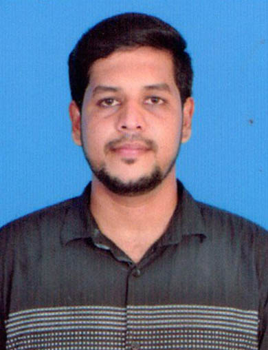

MOHAMMED FAIZAN

Contact: +91 8667246201
Location: Ambur
E-Mail : mohammedfaizanna@gmail.com
Summary
Seeking a challenging and rewarding position as a
purchasing specialist where I can utilize my extensive
experience in procurement and supply chain
management, analytical skills, and excellent
negotiation skills to secure the best prices and terms
for the organization.
EDUCATION
MASTER OF SCIENCE (M.SC) IN MATHEMATICS
Islamiah College,Vaniyambadi
2013-2015
EXPERIENCE
SENIOR PURCHASE EXECUTIVE
Farida Group of Companies
Oct 2017-Present
- Overseeing the procurement of goods andservices for the organization
- Developing and implementing purchasingstrategies to optimize cost and quality
- Negotiating contracts and terms with suppliersand vendors
- Managing relationships with key suppliers andvendors
- Sourced vendors, built relationships andnegotiated prices.
- Improved inspection policies to increase thequality of raw materials and finished goods.
- Used ERP to authorize and monitor purchaseorders and consumables.
- Decreased material expenses by 17% bymanaging tracking and supply.
- Performed monthly reconciliation of openpurchasing orders.
- Identified and targeted critical procurementissues, saving over $13K.
PURCHASE EXECUTIVE
Farida Group of Companies
Aug 2015- Sep 2017
- Monitoring and managing the inventory levels of goods and materials
- Ensuring that all purchasing activities are in compliance with company policies and procedures
- Supervising a team of purchase professionals and providing guidance and support
- Providing regular reports to management on purchasing activities and performance.
- Placed on-time purchase orders with suppliers for leather as required by forecast and production schedule.
- Reviewed purchasing department activities with Procurement to evaluate opportunities for cost savings and efficiency improvements.
Skills
- Strong analytical skills
- Proven ability to negotiate
- Proficiency in using purchasing software and tools
- Strong communication
- Interpersonal skills
- Demonstrated project
- management skills
- Knowledge of market trends
- Reporting knowledge
- Profit and loss understanding
- Process Development
- Vendor sourcing
- Strategic planning
- Proficiency in Eureka and ERP
Languages
CERTIFICATIONS
Certified Python
Perfect E Learning
Oct-2021
HOBBIES
- Social Media
- Playing Cricket
- Playing Badminton
- Reading Books